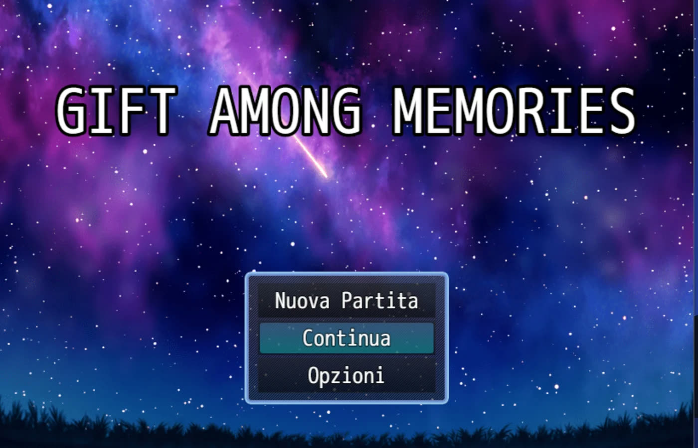

Un gioco narrativo in stile visual novel, fatto con RPG Maker MZ in circa due settimane e pubblicato su itch.io come build HTML5: si gioca direttamente nel browser.
RPG Maker MZ
HTML5
Narrative design

La schermata del titolo.
Ruolo
Sviluppo, scrittura, mappe, eventi, interfaccia, test e pubblicazione
Veronica si sveglia e il suo fidanzato Nicola è sparito. Ha costruito una macchina del tempo per rivivere i loro ricordi e trovare il regalo perfetto per l'anniversario, ma è rimasto intrappolato. Per salvarlo, Veronica entra nei ricordi della coppia, dal primo bacio a una festa di Capodanno, e deve trovare indizi, oggetti e codici d'accesso prima che i ricordi vengano cancellati.
Cosa ho fatto
Ho portato l'idea dalla bozza al gioco pubblicato: struttura narrativa e dialoghi, mappe, eventi e interazioni, interfaccia e test.
Ho pubblicato il gioco su itch.io come build HTML5, giocabile senza installare nulla.
Ho finito un gioco completo da solo in due settimane, scegliendo cosa tagliare per arrivare alla pubblicazione.